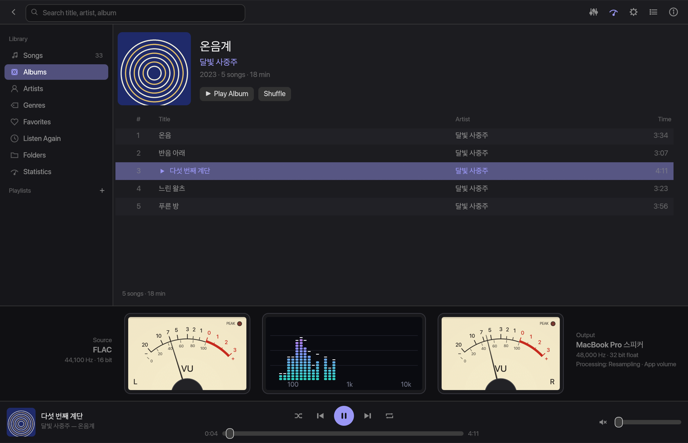
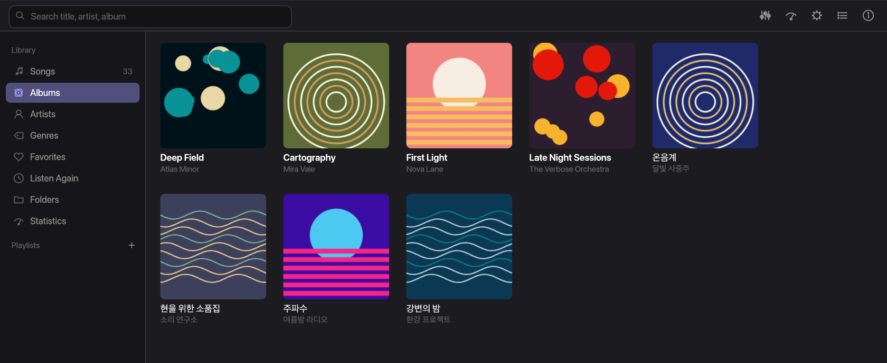
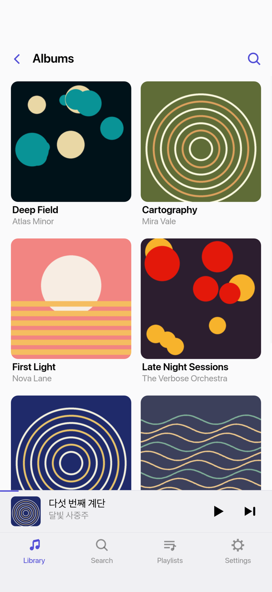
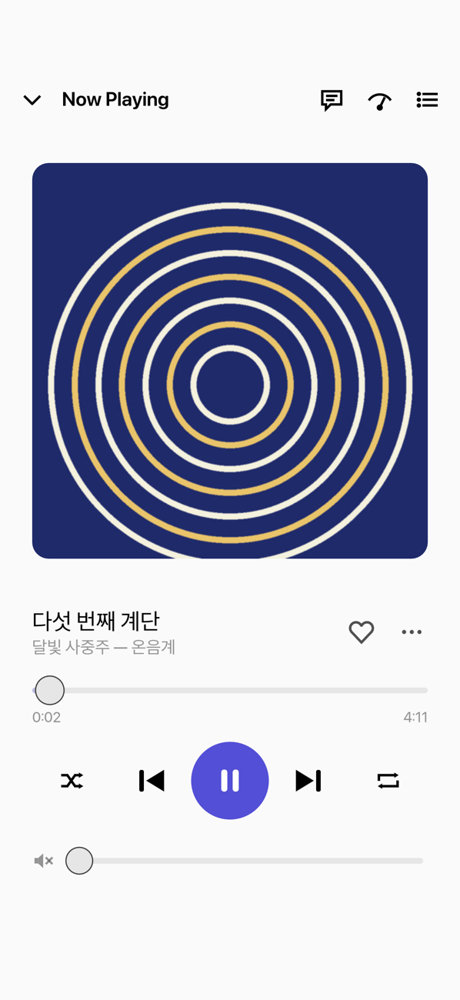
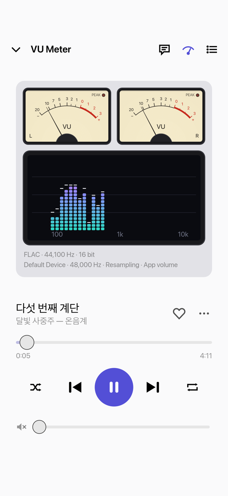

The music you own,
played as it is.
OnEum is an offline player for your own music files. Add a folder and it plays at once. Files are only read. There is no account and no server.
- Formats
- FLAC, WAV, AIFF, ALAC, WavPack, APE, MP3, AAC, Opus, DSD
- Runs on
- macOS, Windows, iPhone, Android
- Network
- None. It works without the internet
- Languages
- Korean, English
- License
- MIT, open source

온음
on-eum
Korean for a whole, unaltered sound, and for the whole tone of music.
What it does
- Play
- Add a folder and it plays while the scan is still running. Songs follow each other without a gap, and an album that is one file is split by its CUE sheet. There is a queue, playlists, shuffle and repeat, and a sleep timer.
- Find
- Searching and scrolling answer at once in a library of 50,000 songs. Search by parts of words, by Korean initial consonants, or by fields such as
artist:,year:1990-1999andplays:>=5. A search can be kept as a smart playlist. - Sound
- The signal path lists what happens between the file and the device. On macOS the device can be set to the song's sample rate, so nothing is converted, or be used exclusively. Where conversion is needed it is flat to 20 kHz.
- See
- A VU meter for each channel and a 36-band spectrum. Lyrics are followed line by line, and there are credits and listening statistics. The file check finds damage, dynamic range and true peak.
- Adjust
- Loudness is evened out between songs. ReplayGain tags are used, and songs without them are measured. There is a ten-band equalizer, correction profiles for 35 headphones, and crossfeed.
- Keep
- Music files and their tags are never changed. There is no advertising, and nothing about what you play is sent anywhere. This page loads no outside fonts and no tracking code either.

On a phone too
The iPhone app and the Android app are built from the same code and have screens of their own, made for a finger. Music plays on with the screen off, and the lock screen and headphone buttons control it.
On an iPhone, put music in with the Files app or Finder on a Mac, or link a folder in iCloud Drive or on a plugged-in drive without copying it. On Android, the phone's Music folder and the folders you add are read where they are.
The pictures were taken on an iPhone. Android uses the same screens.



What was checked
| System | Made for | Checked so far |
|---|---|---|
| macOS | Apple Silicon, macOS 14 or later | Checked on macOS 27.2.1. It is not yet signed and notarised with Apple, so the first start shows a warning. |
| Windows | 64-bit, Windows 10 or later | The zip and the setup program are built. Checking them on a real Windows machine is not finished. |
| iPhone | iOS 16 or later | Checked in the iOS Simulator, and installed and started on a real iPhone. It is not in the App Store: you build and install it with Xcode. |
| Android | Android 11 or later | Checked in an Android 16 emulator. It has not been checked on a real device yet. It is not in a store: you build and install it yourself. |
What was checked, how, and what is still open is written down in TESTING.md in the repository (in Korean).
Get it
Releases
Files to install are put on the releases page on GitHub: a disk image for macOS, a setup program and a zip for Windows. If none is there yet, build from source.
Documents
Build from source
On a Mac with Rust and the Xcode command line tools.
git clone https://github.com/ywjung/oneum.git
cd oneum
scripts/package.sh # the macOS app
scripts/package-windows.sh # the Windows zip and setup program
scripts/ios-sim.sh # run in the iOS Simulator
scripts/package-android.sh # the Android APKWhat is needed, and signing, is in RELEASE.md (in Korean).